*Инструкция по медицинскому применению препарата Нурофен® 12+, таблетки, покрытые оболочкой, 200 мг. Для взрослых и детей
с 12 лет. РУ ЛП-001910. Фармакотерапевтическая группа: НПВП. Представитель в России: ООО «Рекитт Бенкизер Хэлскэр». 115114 Москва, Шлюзовая наб., д. 4, 3 этаж. Тел. горячей линии в РФ: 8 800 200 82 20 (звонок бесплатный).


 
